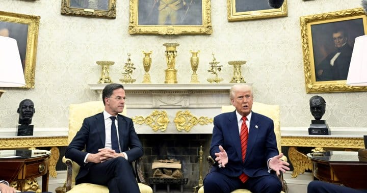

世界苦茶03月14日新闻 | 38条 | 台湾政府出台17项反统战措施

台湾政府出台17项反统战措施 | 普京同意停火但声称要确认细节 | 特朗普坚持要拿下格陵兰与加拿大 | 呼市推出高额生育补贴
三个水枪手
苦茶数据
美元兑人民币：7.24（昨日7.24，前日7.23）
美元兑日元：148.56（昨日147.59，前日148.21）
上证指数：3420（昨日3348，前日3375）
标普500指数：5521（昨日5599，前日5572）
比特币：81975（昨日82961，前日81940）
布伦特原油：70.33（昨日70.78，前日70.03）
中国新闻
• 中国绒毛玩偶涉南海争议，越南全境清查 ：中国绒毛玩偶“娃三岁”在越南掀起热潮，却因玩偶脸上疑似画着中国对南中国海的主权声索“九段线”而引起风波。越南已要求全国清查，严格处理侵犯越南主权的玩具生产及销售单位。越通社星期四报道，越南工贸部国内市场管理与发展局副局长阮清平近日签发第44/TTTN-NV号通知，要求各省市市场管理部门加强对涉及越南主权的玩具产品的监管。通知指出，近期媒体报道市场上出现了一些印有疑似“九段线”图案的儿童玩具产品，并直接点名娃三岁。这些产品不仅通过传统销售渠道销售，还在虾皮、TiktokShop等电商平台及脸书等社交媒体上销售。
• 韩国海警抓获两名偷渡入境中国公民 ：韩国海警抓获两名企图驾驶橡皮艇非法入境的中国公民。据韩联社报道，一名30多岁中国男子和一名50多岁中国女子，上星期五下午6时从中国山东省荣成市驾驶橡皮艇向东航行，试图穿越韩国西部海域进行偷渡，被韩国海警抓获。韩国海警隔天下午2时14分许接到在该海域作业渔船的举报，称在仁川市瓮津郡小青岛东南方向41公里处发现一艘可疑船只。海警随后出动巡逻艇将两人抓获。
• 中国全国两会未通过《民营经济促进法》 ：本周闭幕的中国全国“两会”未能通过备受瞩目的《民营经济促进法》，引发外界广泛猜测。分析人士指出，在习近平近来释放支持民营经济信号的背景下，相关法案仍未获得通过，显示中共内部在经济政策方向上存在严重分歧。3月11日闭幕的中国“两会”审议并通过多项政策报告及法律草案，但未包括外界期待已久的《民营经济促进法》，令人意外。台湾淡江大学中国大陆研究所助理教授曾伟峰对美国之音表示，该法案未能获通过出乎意料。曾伟峰说：“中共立法通常会先酝酿然后起草。像民营经济促进法这种跟民生有关法案，当局会去搜集意见甚至调研，提出意见。草案公开之后当局会向社会征求意见。最后拿到人大讨论。通常拿到人大讨论的草案已经成形，有一定的共识。”
• 新西兰称中国在太平洋施加影响，中方驳斥 ：新西兰情报机构近年多次就“中国威胁”发出警告。新西兰安全情报局局长上星期再次公开示警表示，北京在太平洋地区的影响力日益增长，带来安全风险。中国驻新西兰大使馆星期四回应称相关说法是“无中生有”和“散布虚假信息”。3月6日晚间，新西兰安全情报局局长安德鲁·汉普顿在惠灵顿的维多利亚大学战略研究中心的活动上表示，太平洋国家对经济和跨国犯罪问题的关注，为中国与这些国家签署涵盖经济和安全合作的战略协议打开了大门。汉普顿表示，中国希望“建立竞争性的区域架构，并扩大其对太平洋岛国的影响力”，这涉及了警务、国防、数字、灾难救助、海洋等领域，从而带来外国干预和间谍风险。
• 中国呼和浩特推生育补贴，鼓励人口增长 ：呼和浩特市3月13日公布《关于促进人口集聚推动人口高质量发展的实施意见》实施细则：3月1日起生育补贴：夫妻居住和户籍在呼市，一孩一次性1万元，二孩分五年补贴共5万元，三孩分十年补贴共10万元。除此之外，向每位产妇赠送1500元伊利+1500元蒙牛电子券。对在呼市登记结婚人员提供免费婚检。新生儿提供免费基因筛查。35至64周岁妇女免费筛查乳腺癌宫颈癌。“当年满6周岁”即可登记入小学，出生日期不必在8月前。二孩入学“幼随长走、就近择优”，三孩可全市自由选择。5月1日起，60岁以上免费乘地铁，全国在校大学生五折乘地铁。 （翻评：呼市这个补贴力度如果全国铺开是可能的，假设每年出生900万新生儿，每年财政压力是900亿元，可能未来叠加起来，每年财政4000多亿的负担。这个还不是一个负担不了的事情。）
• 广电总局整顿微短剧内容 ：广电总局3月12日发《微短剧要爽而有度》管理提示，认为“爽”不是微短剧的代名词，穿越重生不等同于艺术想象，狗血低俗不应成为爱情的引线，要求各地对照指导，在规划备案和内容审核方面严格把关。
亚太印太新闻
• 台方驱离中国公务船，疑似水下探测 ：一艘中国大陆公务船被发现在金门海域企图水下探测，被台湾海巡署派出巡防艇制止驱离。台湾海巡署金马澎分署星期四在官网发布新闻稿，称中国大陆公务船“延平2号”星期三下午1时许，擅自闯入台湾金门东碇岛西北方2.6海里处的限制水域，海巡署立即派遣PP-3552及PP-3520两艘巡防艇前往拦截。在驱离延平2号时，PP-3520艇发现该船投放探测仪器下水，疑似进行水下探测作业，PP-3520艇立即搜证广播，要求该船立即收回所放仪器，延平2号回复将配合停止活动，并将仪器回收。下午3时52分时，海巡署两艘巡防艇将延平2号驱离至东碇岛东南方3海里限制水域外，持续往外航离。
• 台湾政府出台17项反统战政策 ：台湾，赖清德3月13日宣布“凝聚反并吞共识，因应中国统战渗透”17条政策：修法恢复军事审判制度。2013年洪仲丘案致使《军事审判法》修正，现役军人犯《陆海空军刑罚》之罪，仅在战时适用军事审判。港澳人士来台，现行1年拿定居身份，改为拿“长期居留”。严格限制“具有统战背景”人士来台，禁止大陆来台人士进行“具统战性质”活动。宗教文化学术教育交流案，本于“去政治化、去风险化”原则进行审批。行政院研拟“提升本土文化产业竞争力”方案，鼓励研究台湾本土历史文化。建立村里长、宗教团体公益组织赴陆交流的揭露制度。对申领台湾居民居住证情况，持续进行清查管理。提供“影艺人员在中国发展之言行应注意事项”，明确“涉及危害国家尊严相关言行”查处范围。对两岸经贸关系和涉及的人流物流金流技术，进行有序的结构调整。他讲话中称：“这样的中国，已是我国反渗透法所定义的境外敌对势力。”
• 印尼监狱越狱事件，32人仍在逃 ：印度尼西亚亚齐省的库塔卡内监狱发生越狱事件，至少52名囚犯越狱，32人仍在逃。印尼《雅加达环球报》报道，这起大规模越狱事件发生在星期一晚上开斋时分。其他当地媒体称，囚犯先破坏三个上锁的安全门，再从监狱正门越过栏杆逃跑。
• 马来西亚前首相接受反贪调查 ：马来西亚前首相依斯迈沙比里星期四到布城反贪污委员会总部接受问话近五小时后，神情淡定地离开反贪会，并未对在场媒体发言。依斯迈星期四上午约9时46分抵达反贪会总部，针对“马来西亚一家”宣传合同贪污案录取口供。大批媒体人员一早就在场驻守，各界高度关注依斯迈是否会被捕。据《东方日报》报道，依斯迈录供近五小时后，于下午3时14分离开反贪会。沙比里的车队没有停留，他仅摇下车窗向在场媒体示意，神情淡定。
• 台湾东部海域发生5.7级地震 ：台湾台东县海域星期四发生5.7级地震，花东地区最大震度达四级。综合台湾《自由时报》《联合报》报道，台湾中央气象署通报，台湾东部海域、即台东县政府东北方53公里星期四下午1时零9分发生芮氏规模5.7地震，地震深度12.5公里。最大震度分布在花莲和台东地区，均为四级。南投、高雄、嘉义县市、台南、云林最大震度三级。屏东县、台中市、彰化县、苗栗县最大震度二级。宜兰县、新竹县、新竹市、桃园市、新北市最大震度一级。
• 朝鲜走私船沉没，20名船员遇难 ：韩国媒体报道，朝鲜走私货船在与中国船只相撞后沉没，20名朝鲜船员遇难。综合韩联社和《朝鲜日报》星期四报道，一艘疑似走私煤炭的朝鲜货船2月在朝鲜半岛西部海域与一艘中国船只相撞后沉没，造成近20名朝鲜船员死亡，朝中两国均对此保持沉默。消息人士称，2月底一艘关闭船舶自动识别系统的朝鲜货船在中国东南部某港口附近与中国船只相撞后沉没。中国有关部门虽展开了救援，但只有部分朝鲜船员获救，约15至20人遇难。中国船只轻微受损。
• 美国退出气候协议，影响印尼能源转型 ：美国退出《公正能源转型伙伴关系协定》，导致印度尼西亚能源转型项目可获得的国际资金出现缺口，为能否如期实现能源转型目标增添变数及难度。不过相关单位说，美国退出对印尼气候项目资金的影响有限。美国财政部上周四正式宣布退出《公正能源转型伙伴关系协定》。这项协定是发达国家和发展中国家之间的合作，旨在帮助发展中国家减少使用煤炭，转向清洁能源。根据协定，印尼将获得国际社会和私企承诺拨款216亿美元。其中116亿美元由包括美国在内的国际伙伴承担，其余由数家银行组成的金融联盟包办。
科技新闻
• 比特币暴跌25%，进入熊市 ：特朗普重掌白宫六个星期后，比特币遭到投资者猛烈抛售，步入熊市。据路透社星期四报道，特朗普去年11月胜选时，比特币吸引了大量投资者涌入，价格随之飙升，并且在今年1月，创下10万9071美元的历史新高。但随后由于美国关税政策愈加激进、经济前景充满不确定性等因素，比特币迅速遭到抛售，逐步回吐涨幅，跌至约8万美元，较1月的峰值下滑近25%。部分通过杠杆买入比特币的投资者，损失尤为惨重。
• 特斯拉中国销量下滑，期待升级车型 ：美国电动车巨头特斯拉在中国销量同比连续五个月下滑后，正寄望升级车款来摆脱颓势。特斯拉于2月底开始在中国交付焕新版Model Y，但由于产量短缺，上海的买家仍在等待交货。香港《南华早报》星期四报道引述特斯拉在上海两位销售经理称，位于上海超级工厂正在加紧生产畅销车型，以确保尽早向客户交付。
• SpaceX推迟国际空间站宇航员发射 ：美国太空探索技术公司推迟了将新一批宇航员送往国际空间站的计划，本次任务原本将为滞留太空的两名美国宇航员返回家园铺平道路。彭博社引述美国航空航天局和SpaceX星期三的声明说，暂停发射的原因是用于支持飞行的地面设备出现了问题。推迟发生在距预定发射时间不到一个小时，当时宇航员们已在太空舱内就坐。发射任务改到何时进行尚未公布。
• 去年美国风能和光伏首次超过煤炭发电量： 根据清洁能源智库Ember的分析，去年美国风能和光伏发电量首次超过煤炭。报告称这两种可再生能源占该国电力结构的17%，而煤炭则降至15%的低点。根据 Ember 对美国能源信息署数据的分析，光伏是增长最快的能源，比前一年增长了 27%，而风能增长了 7%。Ember 首席分析师戴夫·琼斯说：“我们正处于一个新模式中。去年，光伏比天然气更能满足电力需求的增长。这与当前的叙述和未来预期相悖，目前的讨论重点已转向建设更多的天然气发电厂。”风能与光伏在24个州超越煤炭发电量，伊利诺伊州是继2023年亚利桑那州、科罗拉多州、佛罗里达州和马里兰州之后在2024年加入这一行列的州。
财经新闻
• 中国称未向北美出口芬太尼 ：美国总统特朗普以芬太尼为由对中国商品加征关税后，中国国家药监局说，中国目前从未向北美地区出口过芬太尼类药品。中国国家药品监督管理局星期三在官网以发言人答记者问的形式说，芬太尼类药品临床主要用于镇痛，非医疗目的使用会引发药物滥用，甚至导致公共卫生问题和社会问题。发言人指出，去年中国芬太尼类药品出口量为12.3公斤，主要出口至韩国、越南、菲律宾等国家。截至目前，中国从未向北美地区出口过芬太尼类药品。
• 中方要求美方感谢芬太尼管控合作 ：中国外交部一名官员说，华盛顿应为北京在芬太尼问题给予的帮助致谢，而非对中国输美商品加征关税，并呼吁特朗普政府重启对话，解决两国分歧。据彭博社报道，中国外交部和公安部的官员星期三在简报会上说，中国在控制毒品方面取得显著成效，并为美国的芬太尼问题做出最大的努力。这些官员要求在讨论敏感问题时不公开身份。中国外交部一名官员说，北京已在芬太尼问题上为美国提供帮助，华盛顿应当表示感谢，而不是对从中国进口的商品加征关税。他还呼吁特朗普政府重启对话，并称中国愿意继续与美国合作。
• 台股遭遇外资撤离，台积电大跌 ：台湾股市正遭遇史上最严重的外资抛售，其中权重股台积电也失宠。根据彭博汇编的交易所数据，截至星期三，外资已连续12个交易日净卖出台股，累计净卖出规模达到3910亿元新台币。台积电在此期间股价重挫近10%，外资累计净卖出1.55亿股台积电股票。这家全球晶片代工巨头在台股指数所占权重比例超过三分之一。
• 特朗普威胁对欧盟酒类加征200%关税 ：美国总统特朗普说，若欧盟不取消对美国威士忌的关税，美国将对所有来自欧盟国家的葡萄酒，以及其他酒类饮品，加征200%关税。据路透社报道，特朗普星期四在社交媒体Truth Social发文说：“欧盟是世界上最具敌意和滥用税收和关税的机构之一，其成立的唯一目的就是利用美国，它刚刚对威士忌征收50%关税。”特朗普扬言：“如果不立即取消这项关税，美国将很快对来自法国和其他欧盟国家的所有葡萄酒、香槟和酒精饮品征收200%关税。这对美国的葡萄酒和香槟企业来说将是一件好事。”
• 联想反对996，强调准点下班 ：中国联想集团明确表态反对加班和996工作制，并强调员工准点下班并非作秀。联想集团星期三在微信公众号发文说，该公司反对996工作制，大部分人都能准时下班，“这在联想并不是什么新鲜事，也是联想人的共识”。联想集团还称，公司不打卡，实施灵活办公，也不会形式主义地要求几点下班，但这不等于鼓励“躺平”。“因为我们一直相信真正的竞争力来自科技创新，而非无意义的内耗。”
• 东南亚电商市场预计2028年达3250亿美元 ：在数码支付迅速普及和区域互操作性不断增强的推动下，东南亚电子商务市场有望在2028年达到3250亿美元的规模。届时，东南亚电子商务交易也预料仅剩6％是采用非数码方式付款。其中，电商市场价值达80亿美元的新加坡，更只有1％是以非数码方式付款。研究公司国际数据公司受蚂蚁国际旗下的数码化支付解决方案商Antom和支付平台2C2P委托，于星期二发布了《东南亚如何购买和支付》调查报告，全面分析了新加坡、印度尼西亚、马来西亚、菲律宾、泰国和越南这六个东南亚经济体的数码支付格局，以及这些发展如何为企业的跨境商务带来新机遇。
俄乌战争
• 美特使抵俄，商讨停火协议 ：美国中东事务特使维特科夫已抵达俄罗斯边境，克里姆林宫说美国已向俄罗斯提供有关停火提议的某些信息。路透社报道，克里姆林宫发言人佩斯科夫星期四说，俄罗斯总统普京的外交政策顾问乌沙科夫和美国国家安全顾问沃尔茨星期三已进行电话交谈。佩斯科夫说，美国谈判人员正在前往俄罗斯的途中，但没有透露更多细节。
• 普京视察俄军，要求夺回乌军占领地 ：俄罗斯总统弗拉基米尔·普京星期三身着军服突然视察俄罗斯西部库尔斯克地区的部队，他命令部队闪电式前进，迅速从乌军手中夺回其余地区。在普京视察俄军之前，华盛顿要求普京考虑乌克兰支持的30天停火提议，且俄军已经夺回了库尔斯克的大片领土，迫使乌军撤退并放弃对苏贾镇(Sudzha.)的控制。乌克兰2024年8月6日越过边境，占领俄罗斯境内的一块土地。这次行动是这场战争中最大的奇袭战果之一，这不仅鼓舞了公民士气，还获得了潜在的谈判筹码。
• 普京同意停火，但需确认细节 ：俄罗斯总统弗拉基米尔·普京表示支持美国提出的俄乌战争停火建议，但是强调必须要敲定细节。“我们同意停止战斗的建议，但是我们的出发点是假设停火将带来持久和平，并消除危机的根源，”普京星期四在莫斯科对记者说。“或许我应该打电话给特朗普总统，跟他讨论，”他说。
• 俄方称美停火方案无益于俄利益 ：美国总统特使史蒂夫·威特科夫周四早晨刚刚抵达莫斯科，俄罗斯高级官员就放话对美国带来的停火方案表示不满，认为它只会给乌克兰军队提供一个喘息之机。俄罗斯前驻美大使尤里·乌沙科夫周四对俄罗斯官方电视台表示，他周三与白宫国家安全顾问沃尔兹进行了交谈，表达了俄罗斯对停火的基本立场。路透社引用他的话说，“我表明了我们的立场，这只不过是乌克兰军队的暂时喘息，仅此而已。”我们的目标是达成长期和平解决方案，兼顾我国的合法利益和众所周知的关切。在我看来，在这种情况下，没有人需要采取任何仅仅模仿和平行动的措施，”乌沙科夫说。
其他新闻
• 联合国称以色列在加沙实施“种族灭绝” ：联合国调查显示，以色列通过破坏设施，在加沙实施“种族灭绝”行为，但以色列否认指控。法新社报道，联合国调查委员会星期四说，以色列“故意袭击和摧毁”巴勒斯坦领土的主要生育中心，并同时对加沙实施封锁，阻止包括孕产医疗和新生儿护理在内的援助物资进入。报告称，加沙的妇产医院和病房，以及主要体外受精诊所遭到系统性摧毁，包括主要的试管婴儿诊所阿尔-巴斯马生育中心。2023年12月，该诊所遭炮击，约4000个胚胎被毁，而该诊所每月为2000至3000名患者提供生育治疗。
• 叙利亚过渡总统签署宪法宣言 ：叙利亚过渡总统沙拉签署“宪法宣言”，确定过渡阶段为期五年。据法新社报道，沙拉星期四签署宪法宣言，表明这些宣言将在五年过渡期内执行。他说，他希望宪法宣言将标志着“叙利亚新历史的开始，我们将用正义取代压迫”。
• 伊朗召见欧美大使，抗议核问题会议 ：伊朗外交部召见英国、法国和德国的大使，认为他们就伊朗核计划召开闭门会议，是“滥用联合国安理会权力”。伊朗国家媒体引述当地外交部报道说，伊朗并不排除进行谈判的可能性。安理会星期三开会讨论伊朗扩大接近武器级的铀储备问题。英国警告称如有必要，将重启对伊朗的联合国制裁，以防止伊朗获得核武器。
• 美对伊朗持续施压，防止核武扩散 ：美国星期三警告称，将继续对伊朗“极限施压”，以防止其获得核武器。德黑兰近日拒绝了美国提出的新的核谈判提议，而外界对其浓缩铀储备的关切日益加剧。“正如国际原子能机构总干事报告所述，德黑兰仍在迅速加快高浓缩铀的生产。”美国驻联合国使团在一份声明中表示，“伊朗也是全球唯一一个没有核武器但仍在生产高浓缩铀的国家，而它对此并无可信的和平用途。”美国称，伊朗正“公然”违反联合国安理会决议，并无视安理会和国际社会“明确且一贯的关切”。
• 希腊前国会议长塔苏拉斯就任总统 ：希腊前国会议长塔苏拉斯宣誓就任总统，开启五年任期。路透社报道，66岁的塔苏拉斯星期四宣誓就职，接替3月初卸任的萨克拉洛普鲁。塔苏拉斯是保守派总理米佐塔基斯的亲密盟友，米佐塔基斯早前提名塔苏拉斯担任总统职务时，提到他丰富的政治经验和“团结精神”。
• 比利时调查欧洲议会腐败案，多人被捕 ：比利时检察官说，数名人士因涉嫌参与欧洲议会内部腐败案，遭到逮捕。据法新社报道，检察官星期四说，约有100名警察参与此次行动，在比利时布鲁塞尔地区、佛兰德斯、瓦隆，以及葡萄牙进行21次搜查。比利时报纸《晚报》和调查网站《追随金钱》称，此次调查与中国科技巨头华为，及其自2021年以来在布鲁塞尔的活动有关。
• 美清空关塔那摩，最后一批移民被拘者 ：美国已清空位于古巴关塔那摩湾海军基地的最后一批被拘留移民，并将他们送回美国本土等待遣返。两名美国国防官员星期三告诉美国之音，40名被拘留者，包括23名在该基地拘留中心关押的“高危非法移民”，已于星期二被送往路易斯安那州。这些官员要求匿名讨论相关行动，他们表示，这些被拘留者是在移民和海关执法局官员的指示下，搭乘一架非军用飞机被转移的。移民和海关执法局及其上级机构国土安全部尚未对置评请求作出回应。
• 特朗普扬言“不妥协”，坚持对加拿大征收关税直到其被并入美国： 美国总统唐纳德·特朗普周四在椭圆形办公室会见北约领导人时，再次强调加拿大必须并入美国的立场。当被问及是否会重新考虑最近出台的关税政策时，特朗普回答：“不，我不会。”“看看，我们已经被占了多年便宜，我们不会再继续被占便宜了。不，我绝不会妥协。”加拿大总理贾斯廷·特鲁多最近几周曾多次警告，他确信特朗普希望吞并加拿大。三月初，特鲁多曾表示，他相信特朗普希望看到“加拿大经济全面崩溃，因为这样更容易吞并我们。” （翻评：我开始认为特朗普对格陵兰是认真的，但是对加拿大是说着玩的，但现在我觉得可能是认真的。）
• 特朗普在北约秘书长面前再次威胁要并购加拿大和格陵兰岛： 周四，美国总统特朗普在北约秘书长马克·吕特陪同下，再次重申了他多次表达的想要获得加拿大和格陵兰岛的意图。当记者在椭圆形办公室询问美国是否会收购格陵兰岛时，特朗普回答道：“我认为这迟早会发生。”“现在坐在我旁边的这位人物将发挥关键作用。马克，你知道我们在国际安全方面需要这样做，”特朗普转头对吕特说道。北约秘书长吕特表示，他“不希望将北约卷入”关于美国收购格陵兰岛的讨论中，但他同时承认北极地区安全的重要性，强调北方国家需要在“美国的领导下”携手合作，以应对中国和俄罗斯的挑战。
• 特朗普谈吞并格陵兰岛：“我认为迟早会发生”： 特朗普周四再次重申，美国将吞并格陵兰岛，同时还对格陵兰岛的选举结果表示了欢迎。当在椭圆形办公室与北约秘书长马克·吕特会晤时，被问及关于吞并格陵兰岛的看法时，特朗普表示：“我认为迟早会发生。”特朗普称：“我们需要格陵兰岛来维护国际安全。” 他还补充说，他相信吕特会在这件事中发挥“关键作用”。吕特本人表示，他“不想让北约卷入”相关讨论，但也承认，考虑到中国和俄罗斯在北极地区的利益，格陵兰岛对于北极安全的确十分重要。